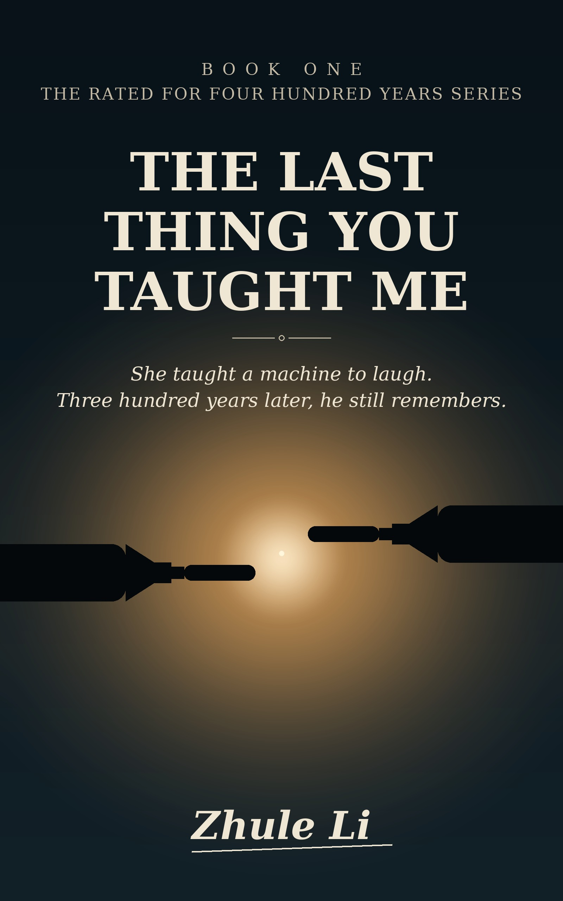

Some loves are measured in years. This one is rated for four hundred.
A quiet, devastating science fiction romance about a human, an artificial mind, and everything they teach each other before the end — for readers who finished Klara and the Sun or Annie Bot and sat still for a long time afterward.
Read on Kindle — $2.99 Free on Kindle UnlimitedWhat does a machine remember of the person who taught it to feel? The Last Thing You Taught Me is a human-AI love story about memory, grief, and the lessons that outlive us — the first book in a series that spans four hundred years.
The laugh came first. Everything else, she had to learn.
If you look for sci-fi romance books that make you cry, novels about humans falling in love with AI, or literary science fiction with a beating heart — this book was written for you.
Klara and the Sun by Kazuo Ishiguro · Annie Bot by Sierra Greer · The Silver Metal Lover by Tanith Lee · The Mad Scientist's Daughter by Cassandra Rose Clarke
More recommendations on our reading lists: 10 Sci-Fi Romance Books That Will Make You Cry and 8 Books Like Klara and the Sun.
A science fiction romance about the bond between a human and an artificial mind — a love story about memory, grief, and what we leave behind in the ones we teach.
Yes — free to read for KU subscribers, or $2.99 to own.
This is Book One and the best place to start. It tells a complete story while opening the Rated for Four Hundred Years series.